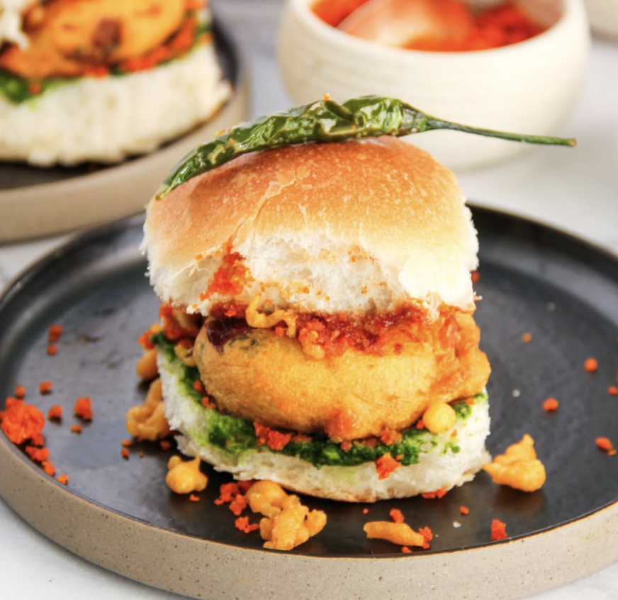

Vadapav Recipe

Description
It's finally here! The most requested Mumbai street-style Vada Pav recipe.
I'm thrilled to share my mom's mouthwatering recipe that I grew up eating, along with all our secret tips to make it super easy and fun to prepare.
Get ready to bring the flavors of Mumbai to your kitchen!
Vadapav is a popular indian street food.
This iconic dish combines a spicy potato fritter (vada) nestled in a soft dinner roll (pav) with a medley of flavorful chutneys and a heap of besan chura.
Ingredients
- 5-6 medium Potatoes
- chikpea flavor
- green chili
- ginger-garlic paste
- turmeric
- salt
- curry leaves
- mustard and cumin seeds
- oil
- water
- ajwain seeds
- hing
How to make Vadapav
- Steam Potatoes.I love the convenience of Instant Pot but you can also use a stovetop pressure cooker or steam them on the stovetop.
Let the potatoes cool down completely. Peel off the skin and dice them into small cubes.
- Heat oil in a medium skillet. Add mustard seeds and let them splutter.
Add asafetida, turmeric, crushed cumin and coriander seeds, ginger, green chili, and curry leaves, and cook for one minute.
Add the potatoes and salt.
- Mix well while mashing with the back of a spatula or a masher. Stir in the sugar and lemon juice, then garnish with cilantro. Mix well and let it cool down. This is your spicy, flavor-packed potato filling.
Shape the mixture into flat vadas about 2 inches wide and ½-inch thick. Make 10 to 12 vadas.
- Add besan to a mixing bowl. Lightly crush the ajwain seeds by rubbing them between your palms to release their aroma, then add them to the bowl along with turmeric and salt.
Add a little bit of water at a time and mix well to create a smooth, flowy batter.
Finally, add baking soda and give it a quick stir.
- Heat oil in a frying pan or kadai.
Check the oil temperature by adding a few drops of batter into the oil; they should rise quickly within 10 seconds.
- Dip your fingers into the batter, then gently shake your hand over the oil to form small, roundish balls (known as Chura) in the oil.
Ensure your fingertips are at least 6 inches above the oil to avoid the hot oil from splattering on your hands.
Fry on medium heat for 3 to 4 minutes or until they turn lightly golden and crispy.
Remove the Chura with a slotted spatula and drain on a paper towel-lined dish.
Repeat the process until you have about 1 cup of fried Chura. Allow it to cool.
- add whole green chilies to the hot oil and fry for 3 to 4 minutes.
Remove them with a slotted spatula and drain on paper towels. Sprinkle salt over the fried chilies.
These chilies are optional but for a full Mumbai street-style taste you must try it at least once.
- Dip the shaped vada one at a time into the batter.
Use a spoon to generously coat it on all sides, lift and tilt the spoon to remove any excess batter, to create a thin layer of coating around the vada.
Carefully add the vada to the hot oil using the spoon. Repeat with another 2 or 3 vadas.
- Fry until golden brown on both sides, about 3 to 4 minutes, turning halfway through.
Fry the remaining vadas in batches.
- Add garlic, fried chura, coconut, salt, and Kashmiri red chili powder to the grinder jar.
Grind until all the ingredients are well incorporated, forming a slightly coarse chutney.
How to serve
- Once all the components are ready get ready to assemble the Vada Pav.
Slice the pav in the center without cutting it all the way through.
- Spread garlic chutney on the bottom, place a vada over it, and add a generous heap of besan chura on top.
- Add a green chili on top, then gently press the pav closed.